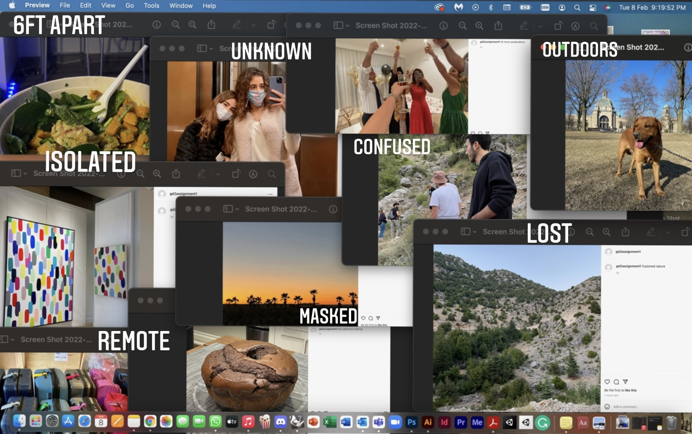
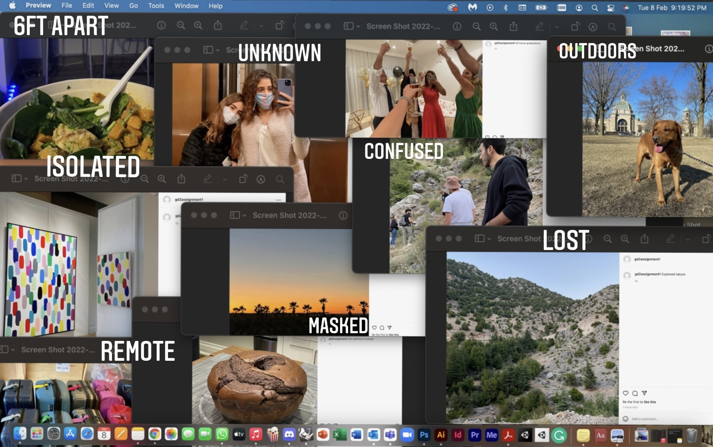
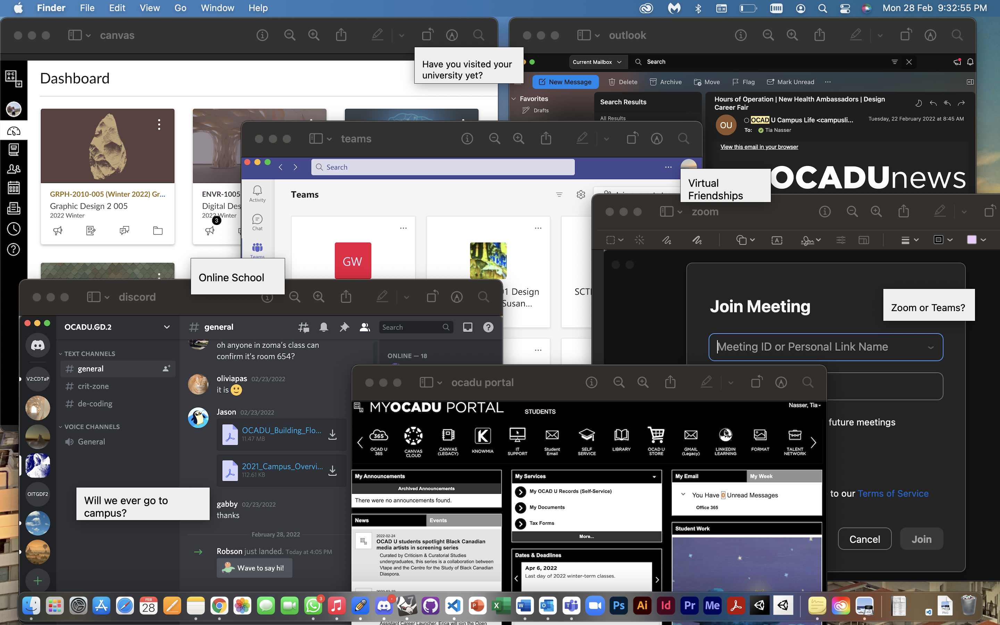
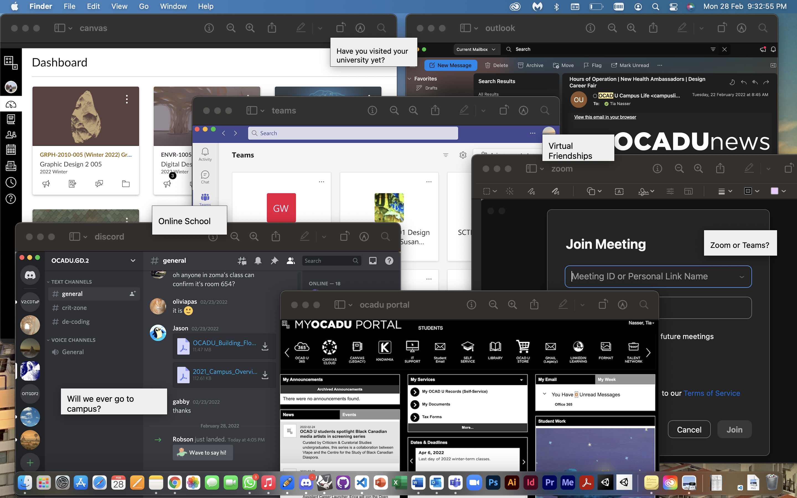
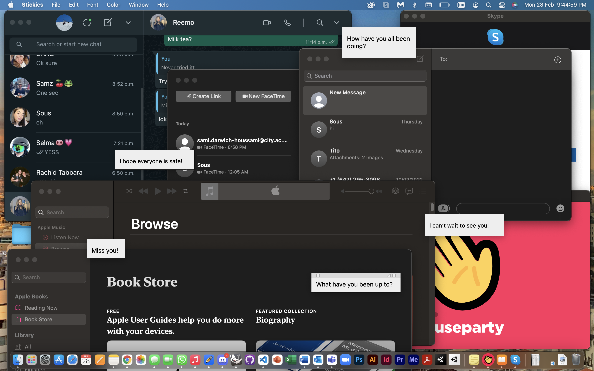
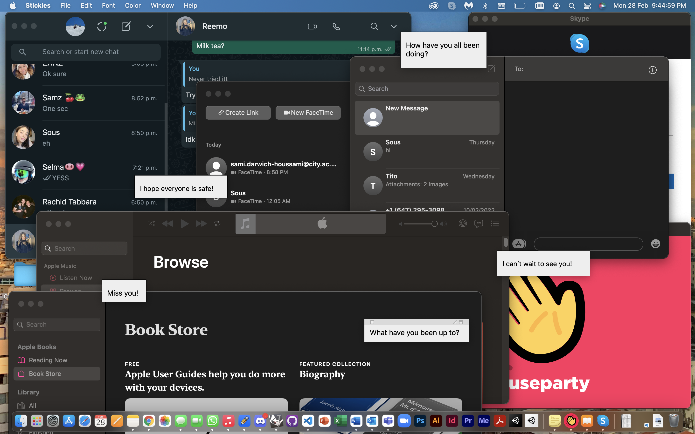

Cofounding Tools Process
At the beggining of this assignment I was quite confused as how I could create a poster without using a design platform to do so. However, as I read the objective and deliverables of the assignment, I slowly began to understand the idea and I began to look at way I can go about completing this assignment.
My first idea included posting pictures on instagram of the activities and actions I did throughout my live in quarantine. I took screenshots of the posts and thought it would be cool to make a poster out of that.

Then, after the first critique, I decided to screen shot the individual posts on the account I created for this assignemnt and rearrange them on my desktop. My feedback included; adding glitch effects, adding more tabs and layers, renaming screenshots, adding the notes app for text, keeping the toolbar, and adding text that include my thoughts during that time.
 


After my first couple drafts I liked the direction in which my poster was going so I decided to keep on making iterations to it until it get to where I want it to be.


After making multiple iterations to my draft, I felt like my poster was too plain and very vague thus, I decided to make 4 different screens each one following a theme of the different activities I did throughout quarantine, then assemble them into 1 composition.
 

 

From this idea, I put together the final draft of my poster. It depicts four different desktop screens each from a different aspect of my life during covid 19; online school, communicating with friends and family, activities that make time pass, and reminiscing about old pictures.

At the end of the assignment, we were given the choice of printing our poster in high quality material and hanging it up on our wall and this is what mine looked like;